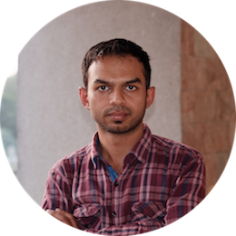

Currently working as a Post-Doctoral Fellow at the Indian Institute of Science Education and Research Bhopal
Background
2015-2022 | Ph.D. | Indian Institute of Technology Guwahati, Prof. M. Ray
2015 | M.Sc | University of North Bengal
2013 | B.Sc. | A. B. N. Seal College
For a quick look at my work, you can view my CV. For details about my recent projects, you can navigate to the Research page.
The best way to reach me:
Contact
Email: tanmaydutta [at] iiser.ac.in
LinkedIn | Twitter | Researchgate | ORCiD | Google Scholar
Address
Department of Chemistry,
Indian Institute of Science Education and Research Bhopal
Bhopal Bypass Road, Bhauri
Bhopal 462 066
Madhya Pradesh, INDIA
IISER Bhopal Map
View Larger Map